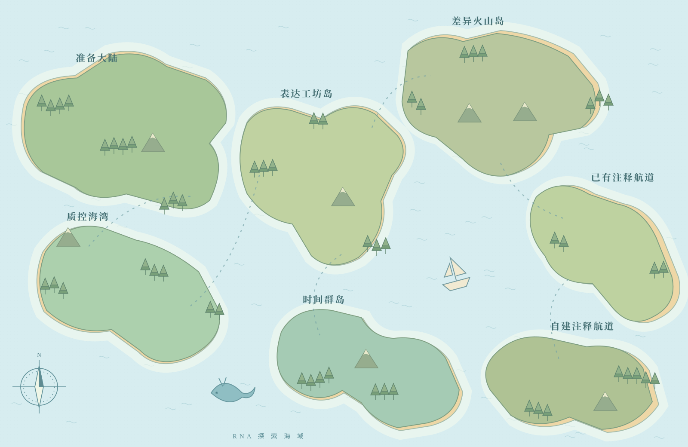

这次，我们追踪一片拟南芥叶的日变化
开灯后 4 小时，
哪些基因换了班？
哪些基因换了班？
ZT4 相对 ZT0
7 个时间点 · 21 个文库
16 个学习地点 · 23 张真实结果图
从原理示意走到真实证据。
点击建筑，就能打开完整课程。
点击建筑进入课程。虚线是探索航线；打开“数据流”可查看分析依赖。小屏幕可以横向移动地图，或使用目录。

启航生命探索营先认识我们在研究什么01–02出航准备港工具、环境与工作目录03–04样本与参考馆认识实验设计与参考资料05质控灯塔FastQC 与 MultiQC06过滤船坞fastp 与处理后复查07定量港Salmon 估计转录本丰度08表达矩阵工坊counts、TPM 与 TMM09样本观测台相关性与 PCA10差异研究所DESeq2 与统计证据11基因交集桥韦恩图与 UpSet12–13火山与热图山把差异表读成两种图14功能图书馆GO、KEGG 与 ORA15排序观测桥GSEA 与整条基因队伍16时间轨迹岛ClusterGVis 与 Mfuzz17周期钟楼MetaCycle 与 JTK18–20非模式探索岛蛋白注释、建库与功能解释启航 · 准备大陆生命探索营先认识我们在研究什么
01–02 · 准备大陆出航准备港工具、环境与工作目录
03–04 · 准备大陆样本与参考馆认识实验设计与参考资料
05 · 质控海湾质控灯塔FastQC 与 MultiQC
06 · 质控海湾过滤船坞fastp 与处理后复查
07 · 表达工坊岛定量港Salmon 估计转录本丰度
08 · 表达工坊岛表达矩阵工坊counts、TPM 与 TMM
09 · 表达工坊岛样本观测台相关性与 PCA
10 · 差异火山岛差异研究所DESeq2 与统计证据
11 · 差异火山岛基因交集桥韦恩图与 UpSet
12–13 · 差异火山岛火山与热图山把差异表读成两种图
14 · 功能双航道功能图书馆GO、KEGG 与 ORA
15 · 功能双航道排序观测桥GSEA 与整条基因队伍
16 · 时间群岛时间轨迹岛ClusterGVis 与 Mfuzz
17 · 时间群岛周期钟楼MetaCycle 与 JTK
18–20 · 功能双航道非模式探索岛蛋白注释、建库与功能解释
公共主路
材料 → 质控 → 过滤 → 定量 → 矩阵 → 样本关系 → 差异
功能双航道
已有注释（14–15）与自建注释（18–20），解释同一差异结果。
时间群岛
从表达矩阵和时间设计出发，分别探索趋势与周期候选。
给自己，也给课堂
每一次抵达，
都把一个问题弄明白。
先听故事，再读证据。每站从问题和原理图开始，接着解释工具、关键参数和真实结果，最后用一道自测检查理解。
一张图，慢慢拆开读。每张真实图都配有醒目的摘要和完整读图详解，从坐标、点线含义到案例数值逐层解释。随时放大图件，或把课程窗口切成全屏进行讲解。
资料就在行囊里。原图、代表数据和脚本都保存在这个文件夹内，整包可以复制和离线使用。